File: 000750.gt.txt (if the image is defective, simply delete all Arabic text and the line will be excluded)
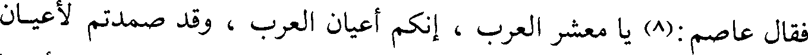
فقال عاصم:(8) يا معشر العرب، إنكم أعيان العرب ، وقد صمدتم لأعيان
File: 000751.gt.txt (if the image is defective, simply delete all Arabic text and the line will be excluded)
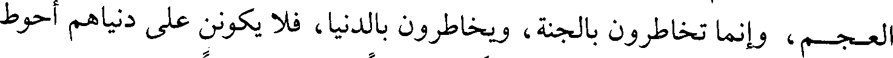
العجم، وإنما تخاطرون بالجنة، ويخاطرون بالدنيا، فلا يكونن على دنياهم أحوط
File: 000752.gt.txt (if the image is defective, simply delete all Arabic text and the line will be excluded)
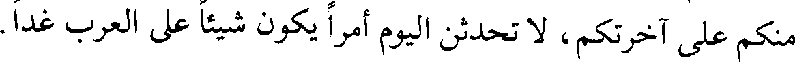
منكم على آخرتكم، لا تحدثن اليوم أمرا يكون شيئا على العرب غدا.
File: 000753.gt.txt (if the image is defective, simply delete all Arabic text and the line will be excluded)
ومن الحوادث في سنة خمس عشرة [فرض العطاء، وعمل الدواوين](1)
File: 000754.gt.txt (if the image is defective, simply delete all Arabic text and the line will be excluded)
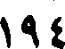
194
File: 000755.gt.txt (if the image is defective, simply delete all Arabic text and the line will be excluded)
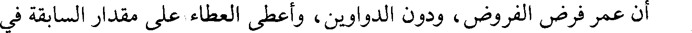
أن عمر فرض الفروض، ودون الدواوين، وأعطى العطاء على مقدار السابقة في
File: 000756.gt.txt (if the image is defective, simply delete all Arabic text and the line will be excluded)
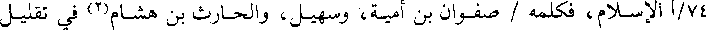
74/أ الإسلام، فكلمه / صفوان بن أمية، وسهيل، والحارث بن هشام(2) في تقليل
File: 000757.gt.txt (if the image is defective, simply delete all Arabic text and the line will be excluded)
عطائهم، فقال : إنما أعطيكم على السابقة في الإسلام لا على الأحساب، فقالوا :
File: 000758.gt.txt (if the image is defective, simply delete all Arabic text and the line will be excluded)
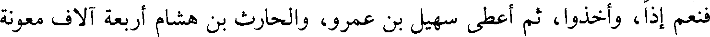
فنعم إذا، وأخذوا، ثم أعطى سهيل بن عمرو، والحارث بن هشام أربعة آلاف معونة
File: 000759.gt.txt (if the image is defective, simply delete all Arabic text and the line will be excluded)
على جهادهما، فلم يزالا مجاهدين حتى أصيبا في بعض تلك الدروب.
File: 000760.gt.txt (if the image is defective, simply delete all Arabic text and the line will be excluded)
وقال ابن إسحاق : إنما ماتا في طاعون عمواس(3).
File: 000761.gt.txt (if the image is defective, simply delete all Arabic text and the line will be excluded)
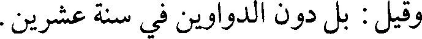
وقيل : بل دون الدواوين في سنة عشرين.
File: 000762.gt.txt (if the image is defective, simply delete all Arabic text and the line will be excluded)
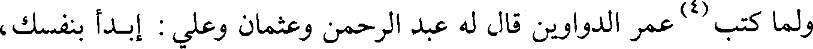
ولما كتب(4) عمر الدواوين قال له عبد الرحمن وعثمان وعلي : إبدأ بنفسك،
File: 000763.gt.txt (if the image is defective, simply delete all Arabic text and the line will be excluded)
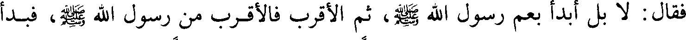
فقال : لا بل أبدأ بعم رسول الله صلعم، ثم الأقرب فالأقرب من رسول الله صلعم، فبدأ
File: 000764.gt.txt (if the image is defective, simply delete all Arabic text and the line will be excluded)
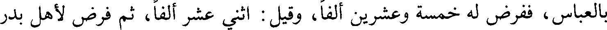
بالعباس، ففرض له خمسة وعشرين ألفا، وقيل : اثني عشر ألفا، ثم فرض لأهل بدر
File: 000765.gt.txt (if the image is defective, simply delete all Arabic text and the line will be excluded)
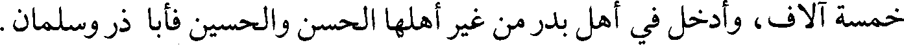
خمسة آلاف، وأدخل في أهل بدر من غير أهلها الحسن والحسين فأبا ذر وسلمان.
File: 000766.gt.txt (if the image is defective, simply delete all Arabic text and the line will be excluded)
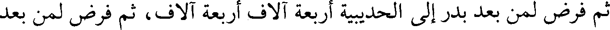
ثم فرض لمن بعد بدر إلى الحديبية أربعة آلاف أربعة آلاف، ثم فرض لمن بعد
File: 000767.gt.txt (if the image is defective, simply delete all Arabic text and the line will be excluded)
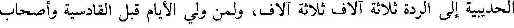
الحديبية إلى الردة ثلاثة آلاف ثلاثة آلاف، ولمن ولي الأيام قبل القادسية وأصحاب
File: 000768.gt.txt (if the image is defective, simply delete all Arabic text and the line will be excluded)
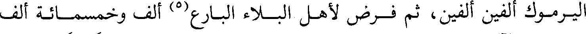
اليرموك ألفين ألفين، ثم فرض لأهل البلاء البارع(5) ألف وخمسمائة ألف
File: 000769.gt.txt (if the image is defective, simply delete all Arabic text and the line will be excluded)
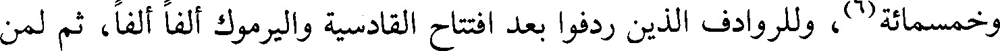
وخمسمائة(6)، وللروادف الذين ردفوا بعد افتتاح القادسية واليرموك ألفا ألفا، ثم لمن
File: 000770.gt.txt (if the image is defective, simply delete all Arabic text and the line will be excluded)
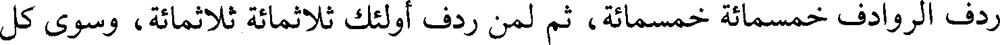
ردف الروادف خمسمائة خمسمائة، ثم لمن ردف أولئك ثلاثمائة ثلاثمائة، وسوى كل
File: 000771.gt.txt (if the image is defective, simply delete all Arabic text and the line will be excluded)
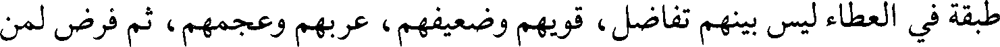
طبقة في العطاء ليس بينهم تفاضل، قويهم وضعيفهم، عربهم وعجمهم، ثم فرض لمن
File: 000772.gt.txt (if the image is defective, simply delete all Arabic text and the line will be excluded)
File: 000773.gt.txt (if the image is defective, simply delete all Arabic text and the line will be excluded)
File: 000774.gt.txt (if the image is defective, simply delete all Arabic text and the line will be excluded)
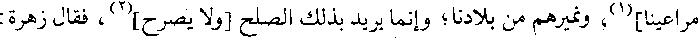
مراعينا](1)، ونميرهم من بلادنا؛ وإنما يريد بذلك الصلح [ولا يصرح](2)، فقال زهرة :
File: 000775.gt.txt (if the image is defective, simply delete all Arabic text and the line will be excluded)
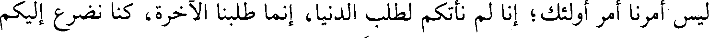
ليس أمرنا أمر أولئك؛ إنا لم نأتكم لطلب الدنيا، إنما طلبنا الآخرة، كنا نضرع إليكم
File: 000776.gt.txt (if the image is defective, simply delete all Arabic text and the line will be excluded)
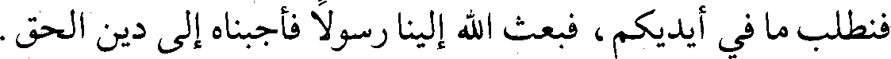
فنطلب ما في أيديكم، فبعث الله إلينا رسولا فأجبناه إلى دين الحق.
File: 000777.gt.txt (if the image is defective, simply delete all Arabic text and the line will be excluded)
فدعا رستم رجال أهل فارس، فذكر لهم ذلك، فأنفوا، فقال : أبعدكم الله، فمال
File: 000778.gt.txt (if the image is defective, simply delete all Arabic text and the line will be excluded)
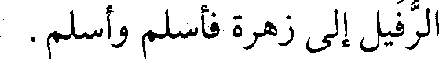
الرفيل إلى زهرة فأسلم وأسلم.
File: 000779.gt.txt (if the image is defective, simply delete all Arabic text and the line will be excluded)
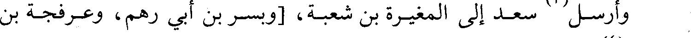
To Save: `Ctrl+s`, make sure to choose `Webpage, complete`!